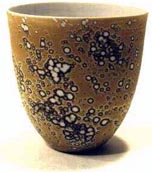

| The Alchemy of Watercolors On Porcelain - Part I
 here
is something enigmatic about the 'Watercolors on Porcelain' technique.
The elusive colors, that may or may not be as expected; the transmutation
in the fire -to get that most precious, beautiful surface. The parallels
with alchemy of the Middle Ages certainly are there: European porcelain
was 'discovered' by the German Alchemist Johann Friedrich Boettger
around 1709, after numerous vain attempts to copy Chinese Porcelain
in the 15th, 16th and 17th centuries. There is the use of precious
metals -gold, silver, rhodium, palladium; the transformation in
the high temperature firing; the knowledge of the underlying chemical
processes; the chance discoveries... While it is not gold that we
are trying to discover (although precious metals including gold
may be used), the 'Watercolors on Porcelain' technique is still
used by relatively few. This has its reasons -some of the raw materials
are prohibitively expensive, they are highly toxic and necessitate
extreme care, the results are not always promising and more research
needs to be undertaken, despite knowledge already pioneered by others. here
is something enigmatic about the 'Watercolors on Porcelain' technique.
The elusive colors, that may or may not be as expected; the transmutation
in the fire -to get that most precious, beautiful surface. The parallels
with alchemy of the Middle Ages certainly are there: European porcelain
was 'discovered' by the German Alchemist Johann Friedrich Boettger
around 1709, after numerous vain attempts to copy Chinese Porcelain
in the 15th, 16th and 17th centuries. There is the use of precious
metals -gold, silver, rhodium, palladium; the transformation in
the high temperature firing; the knowledge of the underlying chemical
processes; the chance discoveries... While it is not gold that we
are trying to discover (although precious metals including gold
may be used), the 'Watercolors on Porcelain' technique is still
used by relatively few. This has its reasons -some of the raw materials
are prohibitively expensive, they are highly toxic and necessitate
extreme care, the results are not always promising and more research
needs to be undertaken, despite knowledge already pioneered by others.
 Just what is WOP? (I shall use this acronym from now on). As most
readers will know, the majority of traditional ceramic colors come
in the form of oxides or carbonates that are used in underglazes,
onglazes and as slip and glaze additives. From these oxides and
carbonates come the broad palette of decorative effects that we
have known for centuries, even millennia. In the late 1980's, Professor
Arne Åse investigated the use of watersoluble metal salts,
derivatives of the oxides and carbonates, for color effects and
possible applications in studio ceramics. He chose to test these
substances on porcelain, as the whiteness of this particular clay
should give the most untainted color response. Thus the WOP technique
was born.
Just what is WOP? (I shall use this acronym from now on). As most
readers will know, the majority of traditional ceramic colors come
in the form of oxides or carbonates that are used in underglazes,
onglazes and as slip and glaze additives. From these oxides and
carbonates come the broad palette of decorative effects that we
have known for centuries, even millennia. In the late 1980's, Professor
Arne Åse investigated the use of watersoluble metal salts,
derivatives of the oxides and carbonates, for color effects and
possible applications in studio ceramics. He chose to test these
substances on porcelain, as the whiteness of this particular clay
should give the most untainted color response. Thus the WOP technique
was born.
Which chemicals are we actually talking about? As already mentioned,
they are watersoluble metal salts: chlorides, sulphates and nitrates
of some common and other not so common metals, eg. Gold Chloride,
Nickel Sulphate or Iron Nitrate. In most cases there will be a chloride,
nitrate and sulphate version of a given metal available, eg. Copper
Chloride, Copper Nitrate and Copper Sulphate. There are also some
useful colorants that aren't actually metallic salts, but nonetheless
watersoluble, eg. Potassium Dichromate. Being watersoluble, these
chemicals will react in a different way when applied to a clay surface.
Instead of sitting on the surface they will stain and penetrate
the clay, sometimes going right through to the other side, so some
unexpected results can be reckoned with!

While a fair amount of research has been done with the chlorides
and nitrates, I think the sulphates have been overlooked somewhat.
The fact that Iron Sulphate, Cobalt Sulphate and Copper Sulphate
were readily available and relatively inexpensive led me to investigate
these chemicals. I'd also like to talk about Gold Chloride, Potassium
Dichromate and to a degree Uranyl Nitrate, plus the effects of resist
materials and the use of Phosphoric Acid. These materials can sometimes
be bought from potters suppliers, some will need to obtained from
a supplier to laboratories. For our purpose, the grade or purity
need not be high. Generally they will be supplied in a powder or
crystalline form from which a solution must be made. When dealing
with these chemicals it is advisable to wear thick rubber gloves,
a mask with gas attachments and also goggles to protect the eyes.
Eating or drinking anywhere near these chemicals is of course out
of the question (and something one shouldn't do near ceramic materials
anyway). A few other things will be necessary: some glass jars that
will not leak (food jars aren't good enough!); a chemists measuring
tumbler, with measurements from 1 to 50 ml; an accurate set of scales,
with 1 gm gradations. All decoration is carried out on bisqued ware
and then fired to approximately 1270 degrees celsius in a reduction
atmosphere.
Cobalt Sulphate
A useful concentration for Cobalt Sulphate is about 10%. To make
this, we weigh 10 gms of Cobalt Sulphate powder and add it to 100
ml of water. I have previously used distilled water, but this isn't
really necessary unless your tap water is really impure. Carefully
add the powder to the water without spilling any. This should be
done wearing a good mask with gas filter and good rubber gloves
that are impervious to water and definitely not inside any living
quarters. Brushes must be washed well in running water and not used
for any other purpose. Always ensure there are a few layers of newspaper
underneath the work to avoid soiling the working area. If anything
is ever spilt, clean it up immediately and thoroughly. Never reuse
cleaning utensils such as sponges.
The solution is now ready to be applied. This can be done with
a brush, freehand or on the wheel. Protect any bench surfaces or
wheel heads with newspaper. Just how many layers of solution should
be brushed on is a matter of finding out what works for you, as
the result also depends on the type of brush you are using and on
the density of the clay. Spraying is not recommended as it can be
messy, even with a spraying booth. One of the greatest difficulties
in applying these chemicals is the fact that they are very hard
to see once painted on. One way to get around this would be to add
ink or food colorants to the liquids.
After applying the Cobalt Sulphate, I sometimes apply a layer
of Uranyl Nitrate over the top, also with a brush, in a concentration
of 7.5%. The greatest care needs to be taken with this chemical,
it is highly toxic! After a short drying time, Phosphoric Acid (85%
concentration) can be applied to achieve the 'halo' effect. Of course
great care also needs to be taken when handling the acid - goggles
should be worn! The effect of the Phosphoric Acid is to displace
the colors and concentrate them on the edge. This will often reveal
the white color of the underlying porcelain.
Next > The Alchemy
of Watercolors On Porcelain > 2
More Articles
|